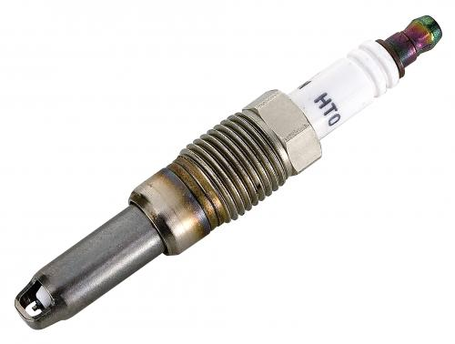

Sparkplug

In gasoline engines the spark plug is use to catalize (start) the buring of the fuel.
In diesel engines a glow plug is used to start the first few explosion cycles. After that the compression alone is enough to set off the explosion!